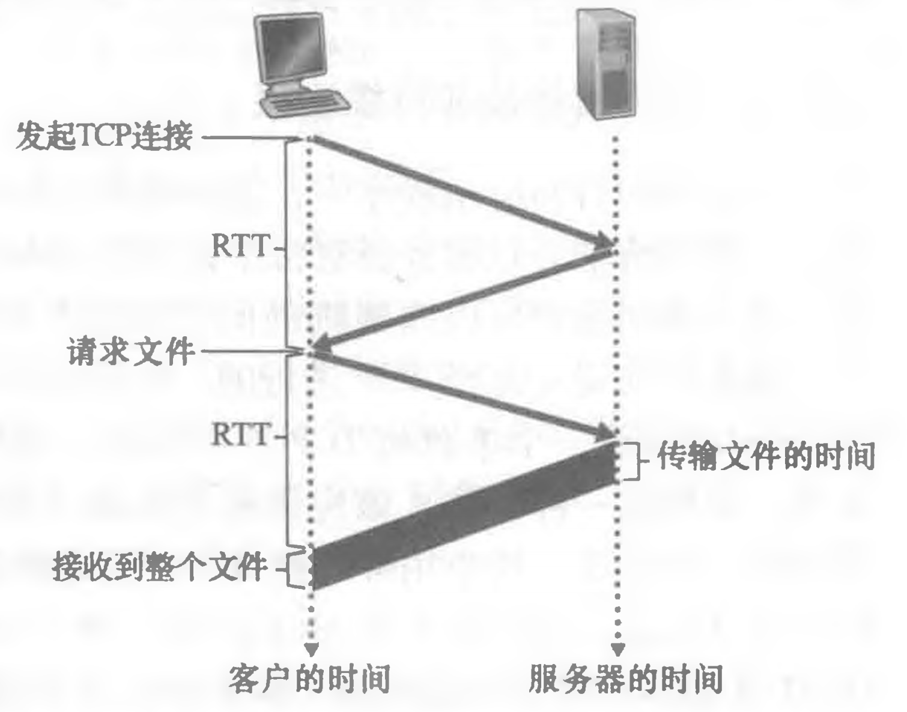
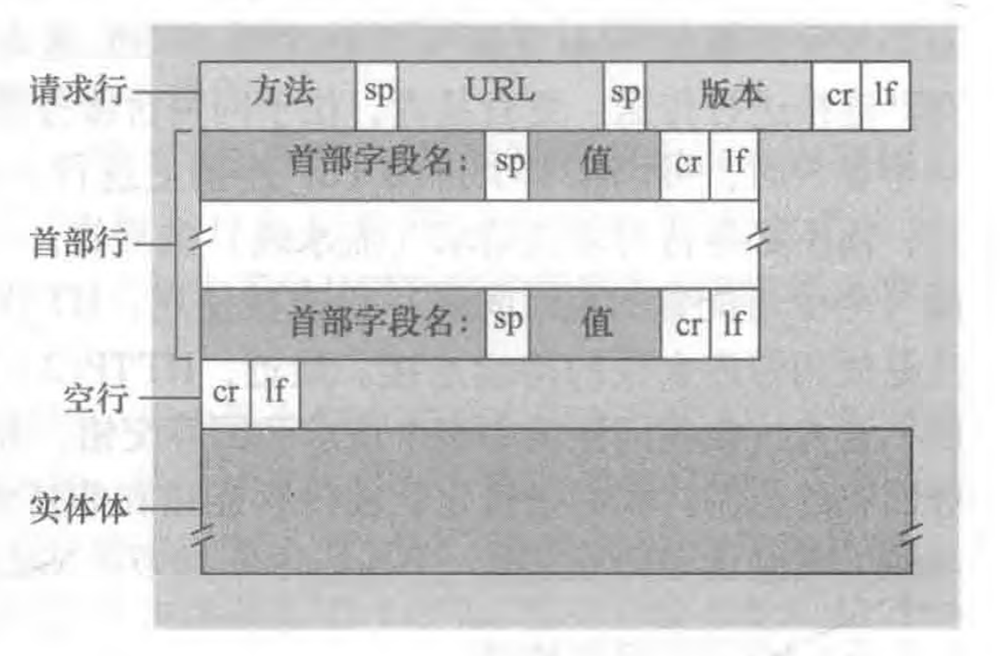
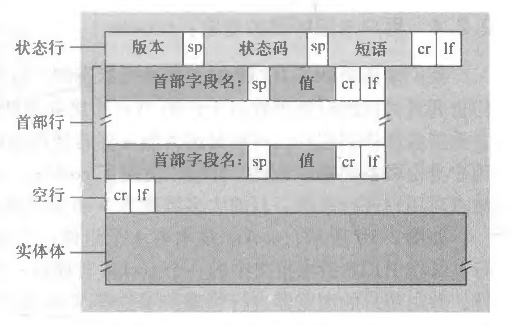
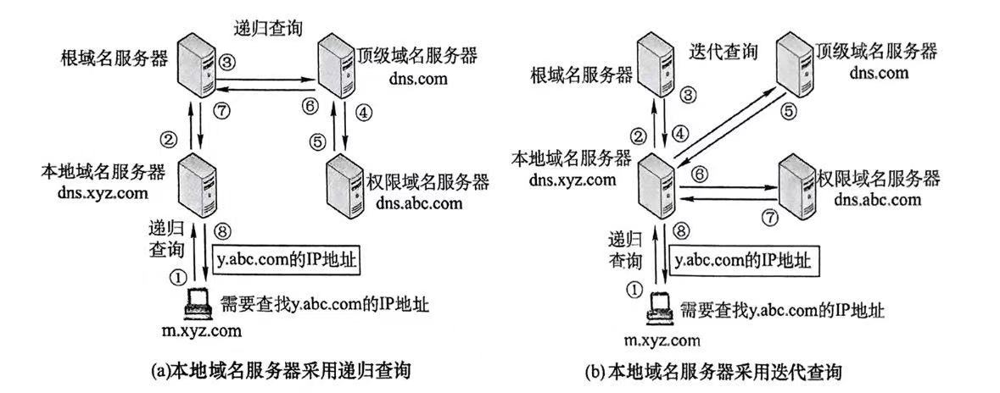
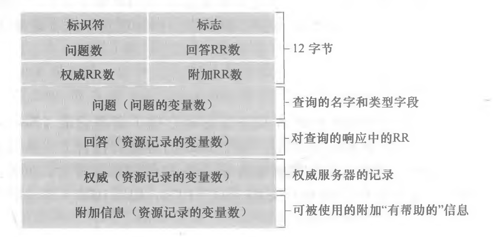

计算机网络知识点整理(2)：应用层
Last updated on June 1, 2025 pm
这是SJTU-CS3611《计算机网络》课程的知识点整理系列。本文整理部分为“第2章：应用层”。
2.1 应用层协议基本原理
2.1.1 网络应用体系结构
- 客户-服务器体系结构 （如HTTP/FTP/IMAP）
- 服务器：永久在线、固定IP、集中式管理
- 客户端：间歇性连接、动态IP、不直接通信
- P2P体系结构（如BitTorrent）
- 无中心服务器、节点兼具客户端与服务端角色
- 优势：自扩展性强、成本低
- 挑战：动态IP、管理复杂
2.1.2 进程通信
- 套接字（Socket）：应用层与传输层接口
- 进程寻址：IP地址+端口号（HTTP:80 / SMTP:25）
2.1.3 运输层服务选择
| 特性 | TCP | UDP |
|---|---|---|
| 可靠性 | 可靠（重传机制） | 不可靠 |
| 连接方式 | 面向连接（三次握手） | 无连接 |
| 流量控制 | 有（滑动窗口） | 无 |
| 拥塞控制 | 有（慢启动/拥塞避免） | 无 |
| 适用场景 | Web/Email/文件传输/远程终端访问 | 实时音视频 |
- TCP 和 UDP 都不提供定时、吞吐量、安全性。
2.2 HTTP 协议（TCP / C-S架构）
2.2.1 核心机制
- 无状态性
- 服务器不保存客户端状态，通过Cookie维持会话
- Cookie工作流程：
Set-Cookie头 → 客户端存储 → 后续请求携带Cookie
- 连接模式
- 非持续连接（HTTP/1.0）：每个对象需单独连接
- 持续连接（HTTP/1.1+）：减少TCP握手开销（2RTT → 1RTT优化）
- 分为 非流水线 和 流水线 两种

2.2.2 报文结构
-
请求报文

1
2
3
4
5GET /somedir/index.html HTTP/1.1 // 请求行: 方法、相对URL、HTTP版本
Host: www.example.com // 服务器域名
Connection: close // 使用非持续连接
User-agent: Mozilla/5.0 // 用户代理（浏览器）
Accept-language: cn // 希望得到的文档语言- 方法：
GET（获取资源）/POST（提交表单）/HEAD（获取首部）
- 方法：
-
响应报文

1
2
3
4
5
6
7
8
9HTTP/1.1 200 OK // 状态行: HTTP版本、状态码、状态信息
Connection: close // 发送完关闭TCP连接
Date: Tue, 18 Aug 2015 15:44:04 GMT // 该报文发送时间
Server: Apache/2.2.3 (CentOS) // 服务器
Last-Modified: Tue, 18 Aug 2015 15:11:03 GMT // 对象最后修改时间
Content-Length: 6821 // 被发送对象的字节数
Content-Type: text/html // 实体体中对象的类型
(data data data data data ...)- 状态码：
200（成功）/301（重定向）/400（错误请求）/404（未找到）
- 状态码：
2.2.3 缓存机制
-
Web缓存作用
- 降低时延：就近获取资源减少传输时间
- 减少带宽消耗：避免重复下载相同内容
- 缓解服务器压力：减少直接请求源服务器的次数
-
条件GET验证
1 | |
1 | |
-
服务器返回
304时，客户端使用本地缓存副本 -
缓存命中率计算：总延迟 = 命中率×缓存延迟 + (1-命中率)×源服务器延迟
2.2.4 HTTP演进
- HTTP/2：帧调度机制（解决HOL阻塞）、服务器推送、优先级机制
- HTTP/3：基于QUIC（UDP实现）
2.3 电子邮件（TCP / C-S架构）
-
SMTP（发件协议）
- 命令交互式（HELO / MAIL FROM / RCPT TO / DATA / QUIT）
- 仅限7位ASCII码文本邮件（MIME 支持多媒体附件）
-
POP3 / IMAP（收件协议）
- IMAP：服务器存储状态，支持文件夹管理
-
发件和收件均可使用 HTTP
2.4 DNS（UDP / C-S架构）
2.4.1 分层结构
根DNS顶级域(TLD) DNS（.com/.org）权威DNS本地DNS
2.4.2 查询过程
- 递归查询：本地DNS全权代理
- 迭代查询：每一步返回下一跳地址

- DNS缓存：
- DNS 服务器能本地存储解析记录，以减少响应时间。
- 缓存条目在 TTL 超时后消失。
2.4.3 资源记录（RR）
- 记录格式：
(Name, Value, Type, TTL) - TTL（生存时间）：该记录应当从缓存中删除的时间
- Type：
A：主机名 → IP 地址NS：域名 → 权威 DNS 服务器的主机名CNAME：主机别名 → 规范主机名MX： （邮件服务器）简单别名 → 规范主机名
2.4.4 报文格式

- 可以用
nslooksup程序发送 DNS 查询报文
2.4.5 DNS 安全
- DDoS攻击：向根域名服务器发送大量流量
- 欺骗攻击：拦截DNS查询，返回虚假响应
2.5 P2P文件分发（TCP / P2P架构）
2.5.1 分发时间公式
C/S模型
- ：客户端数量
- ：文件总大小
- ：服务器上传带宽
- ：最慢客户端下载带宽
P2P模型
- ：第 个客户端的上传带宽
效率对比结论
| 模型 | 扩展性 | 服务器压力 | 适用场景 |
|---|---|---|---|
| C/S | 差（随N线性增长） | 极高 | 小规模、私密文件 |
| P2P | 优（自扩展） | 极低 | 大规模公开分发 |
2.5.2 BitTorrent
核心内容
- 文件分块
- 洪流（torrent）：一组交换文件块的对等体
- 追踪器（tracker）：能追踪参与洪流的对等体
请求策略——最稀缺优先
- 优先请求邻居中副本最少的块
- 均衡分块的副本数量，加速文件完整传播
发送策略——Tit-for-Tat
- 优先发送给上传速度最快的4个邻居，每10秒重新评估
- 每30秒随机选择另一个节点发送数据块
- 能发现潜在高速节点，对等方速率趋于协调
2.6 视频流与内容分发网（HTTP / TCP / C-S架构）
2.6.1 DASH（Dynamic Adaptive Streaming over HTTP）
- 不同速率编码：将视频切割为多个片段，每个块以多个不同速率编码
- 动态码率调整：
- 带宽充足时，请求更高码率分片
- 带宽不足时，请求更低码率分片
- 缓冲区管理：维持5~10秒播放缓冲防止卡顿
2.6.2 CDN（内容分发网络）
核心概念
CDN通过地理分布的服务器节点缓存内容，将用户请求重定向到最优节点以提升访问速度。主要解决大规模内容分发的带宽压力与延迟问题。
服务器部署策略
| 策略 | 部署方式 | 优点 | 缺点 |
|---|---|---|---|
| Enter Deep | 边缘节点深入ISP网络 | 低延迟、高吞吐量 | 部署和维护成本高 |
| Bring Home | 集中部署在关键节点（如IXP） | 管理成本低 | 延迟较高、带宽利用率较低 |
关键技术
- DNS重定向：通过修改DNS响应将用户请求导向最近的CDN节点
- 集群选择策略：基于时延测量、地理位置等指标选择最优服务节点
- 内容缓存机制：使用拉取/推送策略在节点间同步热门内容
2.7 套接字编程
2.7.1 UDP套接字编程
特性：无连接、不可靠传输、适用于实时应用（如视频会议）
1 | |
2.7.2 TCP套接字编程
特性：面向连接、可靠传输、保证数据顺序
1 | |
注：本文中部分图片来自《计算机网络·自顶向下方法》。
计算机网络知识点整理(2)：应用层
https://cny123222.github.io/2025/03/22/计算机网络知识点整理-2-：应用层/